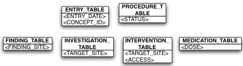

This is the object model to relational model mapping structure where a separate
table is created for every sub class in the class hierarchy.
The following are the salient features of this mapping
strategy.
- This option uses a separate table for each sub class in the inheritance
hierarchy.
- Inheritance relationships are represented as foreign keys.
- This approach differs from the first option in that the table for each sub
class only includes columns only for the non-inherited properties.
- The values of all the properties of a given class can be retrieved by
performing a join of the super-class-table and the corresponding
sub-class-table.
- The advantages of this approach are that
- The database schema is normalised.
- Schema evolution and integrity constraint definition is
straightforward.
- We can declare mandatory properties to be ‘non-null’ and enforce integrity
unlike in Table
Per Class Hierarchy Mapping.
- Though this approach does not involve the use of as many joins/unions as Table per Class
Mapping, it still requires the use of multiple joins and hence might
not perform as well as Table Per Class Hierarchy Mapping.
Data retrieval against this schema depends on the query that is to be
created. For example, in the figure shown, in order to retrieve all patients who had a
procedure that happened on a given date, we would perform the following query.
- SELECT PATIENT_ID FROM SINGLE_PROCEDURES_TABLE WHERE PROCEDURE_DATE = ?
If on the other hand, we had to return all the patients who were given a drug dose
greater than 50 on a given date, the SQL might look like
- SELECT PATIENT_ID FROM MEDICATION_TABLE
- INNER JOIN PROCEDURES_TABLE ON MEDICATION_ID = PROCEDURE_ID
- AND
- PROCEDURE_DATE = ? • AND • MEDICATION_DOSE >50
